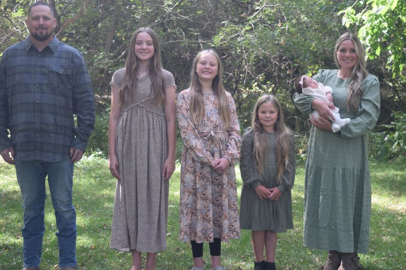

Amy Nash | WDD 130

My name is Amy Nash. I live in North Dakota. I have been married since 2009. I have four daughters. I love spending time with my family, they are my whole world. Life as of late has been full of keeping up with my daughters' piano lessons, gymnastics, volleyball, basketball, and whatever sport is in season. I wouldn't have it any other way, though. These experiences help the girls and it becomes a family gathering where we are able to support each other and spend time together. I am working towards a Software Development Degree. I'm hopeful that this education will help my family.